유통관리사-2급 (2019-04-14 기출문제)
1과목: 유통물류일반
1. 공급사슬관리(SCM)에서 활용하는 지연전략(postponement strategy)에 대한 내용으로 옳은 것은?
- 지연전략은 고객의 수요를 제품설계에 반영시킴으로서 생산 후 재고보유 시간을 최대한 연장시키는 전략이다.
- 주문을 받기 전까지 모든 자동화의 기본 색을 유지시키고 이후 색상주문이 들어오면 페인트 칠을 하는 것은 지리적 지연전략이다.
- 가장 중요한 창고에 재고를 유지하며, 지역 유통업자들에게 고객의 주문을 넘겨주거나 고객에게 직접 배송하는 것은 제조 지연전략이다.
- 컴퓨터의 경우, 유통센터에서 프린터, 웹캠 등의 장치를 최종적으로 조립하거나 포장하는 경우는 결합 지연전략이다.
- 신차판매 시 사운드 시스템, 선루프 등을 설치옵션으로 두는 것은 지리적 지연전략이다.
(정답률: 64%)

2. 채찍효과(bullwhip effect)의 대처방안으로 옳지 않은 것은?
- 일괄주문 방식을 소량 다빈도 주문방식으로 전환한다.
- 고객이 선호할만한 대규모 할인정책을 실시한다.
- 과거의 판매실적을 활용한 배분을 실시한다.
- 전략적 파트너십을 활용한다.
- 일괄수요예측을 실시한다.
(정답률: 59%)
3. 고객이 요구하는 서비스의 수준에 맞추어 물류활동이 '적절하다(Right)'라는 의미와 관련된 물류의 7R의 내용으로 옳지 않은 것은?
- 적절한 상품(Right goods)
- 적절한 품질(Right quality)
- 적절한 시간(Right time)
- 적절한 장소(Right place)
- 적절한 판촉활동(Right promotion)
(정답률: 81%)
4. 화주기업과 제3자물류업체 사이의 관계 개선의 방안으로 옳지 않은 것은?
- 물류업무에 관한 협력(collaboration)
- 전략적 제휴에 의한 파트너십 구축
- 정보의 비공개에 의한 효율적인 업무개선
- 주력부문에 특화된 차별화를 통한 경쟁우위 확보
- 물류아웃소싱을 탄력적으로 선별할 수 있는 화주기업의 능력배양
(정답률: 90%)
5. 신제품의 경우 기존 자료가 없어서 보완제품이나 대체제품, 경쟁제품 등의 자료를 사용하여 수요를 예측하기도 한다. 이러한 수요예측 방법에 관한 용어로서 가장 옳은 것은?
- 패널동의법(panel discussion)
- 델파이법(Delphi method)
- 역사적 유추법(historical analog)
- 시나리오 기법(scenario technique)
- 회귀분석법(regression method)
(정답률: 68%)
6. 택배운송에 대한 설명으로 옳지 않은 것은?
- 택배란 운송물을 고객의 주택, 사무실 또는 기타의 장소에서 수탁하여 수하인의 주택, 사무실 또는 기타의 장소까지 운송하여 인도하는 것을 말한다.
- 일반적으로 소형, 소량화물의 배송에 적합한 운송체제이다.
- 원칙적으로 화물운송 전 과정에 걸쳐 운송인이 일관적으로 책임을 부담한다.
- 도시 간 지선수송과 도시 내 집배송, 간선배송을 연계시키는 운송이다.
- 택배운송업의 집배송차량이 도시 내에서 화물을 집화하고 배송하기 위해서는 도심 내 권역별 화물터미널의 확보를 통한 서비스 네트워크 구축이 필요하다.
(정답률: 44%)
7. 공급사슬관리(SCM)의 효과를 제대로 발휘하고 충족시키기 위한 기본요건으로 옳지 않은 것은?
- 공급체인 구성원은 경쟁관계에서 동반관계로 전환해야 한다.
- 수요기업과 공급기업 간의 진실한 협력(true-collaborative)체제가 이루어져야 한다.
- 소매업체와 제조업체 간 협력과 원활한 커뮤니케이션이 이루어져야 한다.
- 물류활동의 통합을 위해, 체인 내의 파트너들이 수요, 판매, 재고, 수송 등의 자료를 공유해야 한다.
- 전사적자원관리(ERP), 고객관계관리(CRM) 등의 통합정보시스템 지원은 필수적인 것은 아니다.
(정답률: 89%)
8. 직무의 특성이 직무수행자의 성장욕구수준에 부합할 때, 직무가 그/그녀에게 보다 큰 의미와 책임감을 주게 되므로 동기유발측면에서 긍정적인 성과를 낳게 된다고 주장하는 동기부여이론으로 옳은 것은?
- 해크만과 올담의 직무특성이론
- 매슬로의 욕구단계이론
- 알더퍼의 ERG이론
- 맥클리랜드의 성취동기이론
- 허즈버그의 2요인이론
(정답률: 46%)
9. 아래 글상자 내용은 소매상의 직무설계과정을 구성하는 단계들이다. 올바른 수행순서에 따라 단계들을 나열한 것은?
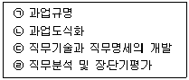
- ㉠ - ㉡ - ㉢ - ㉣
- ㉠ - ㉢ - ㉡ - ㉣
- ㉡ - ㉢ - ㉣ - ㉠
- ㉢ - ㉣ - ㉠ - ㉡
- ㉣ - ㉠ - ㉡ - ㉢
(정답률: 74%)
10. 여러 재무비율들 간의 상호관계를 이용하여 경로성과를 평가하는 방법을 전략적 이익모형(strategic profit model)이라고 한다. 전략적 이익모형의 시사점으로 옳지 않은 것은?
- 모형에 의하면 기업의 중요한 재무적 목표는 순자본 투자에 대한 충분한 수익률을 올리는 것이다.
- 모형은 목표투자수익률을 달성하기 위해 다른 기업들이 채택한 재무전략들을 평가하는데 유용한 기준이 된다.
- 모형은 경로성과를 높이는 데 있어 경영의사결정의 주요 영역들 즉 자본관리, 마진관리, 재무관리들을 제시한다.
- 자본, 마진, 재무계획들 간의 관계를 잘 활용하는 기업은 높은 수익을 올릴 수 있다.
- 모형은 수익성 향상을 위한 3가지 가능한 방법들을 제시하는데, 자산회전율을 낮추거나, 이익마진을 감소시키거나, 레버리지 효과를 낮추는 것 등이다.
(정답률: 83%)
11. 아래 글상자 내용 중 물류아웃소싱의 성공전략을 모두 고른 것은?
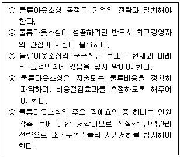
- ㉠
- ㉠, ㉡
- ㉠, ㉡, ㉢
- ㉠, ㉡, ㉢, ㉣
- ㉠, ㉡, ㉢, ㉣, ㉤
(정답률: 84%)
12. 재고총이익률(GMROI : gross margin return on inventory investment)에 대한 내용으로 옳은 것은?
- 매출 총마진을 직접제품이익으로 나눈 값이다.
- 이익관리와 재고관리를 결합한 성과측정치이다.
- 매출을 일정수준 이상으로 유지하면서도 판매비와 광고비를 감소시키는 것을 목적으로 한다.
- 가격경쟁이 치열하다면 총마진 증대가 어려우므로 시설고정비를 최소화하여 재고투자 총이익을 높일 수 있다.
- 순매출을 총자산으로 나눈 비율을 의미한다.
(정답률: 57%)
13. 마이클포터(Michael Porter)가 제시한 기업의 경쟁을 결정하는 5가지 요인으로 옳지 않은 것은?
- 공급자의 교섭력
- 구매자의 교섭력
- 보완재의 유무
- 잠재적 진입자와의 경쟁
- 기존 기업들 간의 경쟁
(정답률: 62%)
14. 전통적 전략과 가치혁신 전략의 비교 설명으로 옳지 않은 것은?
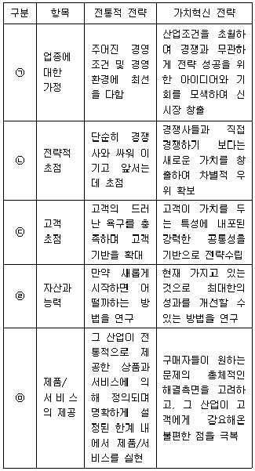
- ㉠
- ㉡
- ㉢
- ㉣
- ㉤
(정답률: 74%)
15. 유통기업의 외부적 환경의 내용으로 옳지 않은 것은?
- 인공지능 및 자율주행기술 등 급격한 기술발전을 포함하는 환경
- 자사의 핵심역량, 비전, 목표, 정책 등의 전략적 환경
- 시장의 인구증가율, 연령, 직업, 소득수준 등의 인구 통계적 환경
- 건강, 웰빙, 힐링같은 소비자들의 가치관, 의식, 생활양식 등의 사회적 환경
- 법률, 제도, 각종 규제 등의 정치적·법률적 환경
(정답률: 85%)
16. 기업의 사회적 책임과 그 내용의 연결이 옳은 것은?
- 경제적 책임 – 도덕적 가치의 수호
- 윤리적 책임 – 이윤극대화
- 재량적 책임 – 기업의 자발적인 윤리적 행위
- 법적 책임 – 기업윤리의 준수
- 본질적 책임 - 기부활동
(정답률: 61%)
17. 사업이 성장하면 유통경로의 적절한 관리전략이 필요하다. 유통경로의 성장전략들에 대한 설명으로 옳지 않은 것은?
- 통제전략은 유통경로기관보다 기업(channel leader)의 힘이 더 강할 때만 활용할 수 있는데, 통제, 이행, 순응을 지시한다.
- 권한위임전략은 유통경로기관보다 기업(channel leader)이 더 잘 알려져 있고 자금력도 있으며 지역에서 영향력이 있을 때 사용된다.
- 협력전략은 유통경로기관과 기업(channel leader)의 힘이 비슷할 때 사용되는데, 신뢰와 관계의 중요성을 인정한다.
- 합작투자는 시장점유율의 성장을 위해 둘 이상의 개별기업에 의해 형성되는 기업형태이다.
- 전략적 제휴는 다른 회사의 매입, 매각과 결합을 다루는 기업전략이다.
(정답률: 71%)
18. “전통시장 및 상점가 육성을 위한 특별법”(법률 제15689호, 2018.6.12., 일부개정)의 용어의 정의로 옳지 않은 것은?
- "상가건물"이란 같은 건축물 안에 판매 및 영업시설을 갖추고 그 밖에 근린생활시설을 갖춘 건축물을 말한다.
- "복합형 상가건물"이란 같은 건축물 안에 판매 및 영업시설 외에 공동주택이나 업무시설을 갖추고 그 밖에 근린생활시설 등을 갖춘 건축물을 말한다.
- "상업기반시설"이란 시장ㆍ상점가 또는 상권활성화구역의 상인이 직접 사용하거나 고객이 이용하는 상업시설, 공동이용시설 및 편의시설 등을 말한다.
- "상인조직"이란 전통시장 또는 상점가의 점포에서 상시적으로 직접 사업을 하는 상인들로 구성된 법인ㆍ단체 등으로서 중소벤처기업부장관이 정하는 것을 말한다.
- "상권활성화구역"이란 시장 또는 상점가가 하나 이상 포함된 곳으로서 시장ㆍ군수ㆍ구청장이 지정한 구역을 말한다.
(정답률: 59%)
19. 아래 글상자 내용은 경로시스템 내 구성원들 간에 이루어지는 거래관계의 유형인 단속형 거래(discrete transaction)와 관계형 교환(relational exchange)의 비교 설명이다. 가장 옳지 않은 것은?
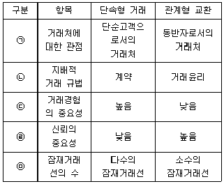
- ㉠
- ㉡
- ㉢
- ㉣
- ㉤
(정답률: 68%)
20. 경로상에서 재고보유에 따른 위험을 어느 경로 구성원이 부담하느냐에 따라 적절한 서비스의 제공, 제품 분류 작업의 이행, 경로구성원 사이의 적절한 이윤 배분 등이 이루어진다고 설명하는 이론은?
- 기능위양이론
- 연기-투기이론
- 거래비용이론
- 커버리지이론
- 체크리스트이론
(정답률: 69%)
21. 아래 글상자 내용 중 업종개념과 업태개념의 비교 설명으로 옳지 않은 것은?
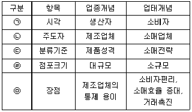
- ㉠
- ㉡
- ㉢
- ㉣
- ㉤
(정답률: 63%)
22. 유통과 유통경로에 관련된 설명으로 옳은 것은?
- 유통의 상적기능에는 소유권이전기능, 매매기능, 장소적 조정기능이 포함된다.
- 수직적경로시스템이란 생산자가 제품을 최종 소비자에게 제시하는 유통구조의 통로를 말한다.
- 유통경로에서 중간상이 생략됨으로써 유통이 단순화, 통합화되어 실질적인 거래비용이 감소되는 것을 총 거래수 최소원칙이라고 한다.
- 제조분야는 변동비 비중이 고정비보다 커서 생산량이 증가할수록 단위당 생산비용이 감소하지만, 유통은 고정비 비중이 커서 규모의 경제가 작용하는 고정비 우위의 원리가 적용된다.
- 도매상이 대량으로 보관하고 소매상은 적정량만 보관하므로 상품의 사회적 보관 총량을 감소시킬 수 있는 것을 집중준비의 원리라고 한다.
(정답률: 34%)
23. 아래 글상자에서 설명하는 수배송 공급모형으로 옳은 것은?
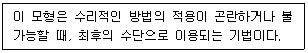
- 세이빙(saving)법 모형
- 수배송선형계획법 모형
- 시뮬레이션(simulation) 모형
- 최적화(optimization) 모형
- 휴리스틱(heuristic) 모형
(정답률: 65%)
24. 유통산업의 경제적ㆍ사회적 역할로서 옳지 않은 것은?
- 고용창출
- 물가조정
- 제조업 발전의 저해
- 소비문화의 창달
- 생산자와 소비자 간 매개 역할
(정답률: 86%)
25. 소매업태 발전에 관한 이론 중 소매차륜(수레바퀴)이론에 해당하는 내용만을 나열한 것은?
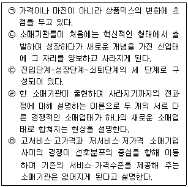
- ㉠, ㉡
- ㉡, ㉢
- ㉢, ㉣
- ㉣, ㉤
- ㉠, ㉢, ㉤
(정답률: 60%)
2과목: 상권분석
26. 입지결정과정에서 고려하는 다양한 요소 중 용적률과 건폐율에 대한 설명으로 옳지 않은 것은?
- 용적률과 건폐율은 입지결정시 해당 지역의 개발밀도를 가늠하는 척도로 활용한다.
- 건폐율은 대지면적에 대한 건축면적의 비율을 말한다.
- 용적률은 부지면적에 대한 건축물 연면적의 비율로 산출한다.
- 용적률과 건폐율의 최대한도는 관할 구역의 면적과 인구 규모, 용도지역의 특성 등을 고려하여 「국토의 계획 및 이용에 관한 법률」에서 정한다.
- 건폐율을 산정할 때는 지하층의 면적, 지상층의 주차용으로 쓰는 면적, 초고층 건축물의 피난안전구역의 면적은 제외한다.
(정답률: 64%)
27. 아래 글상자의 사항들 가운데 상권내 경쟁구조분석에 포함될 내용으로 가장 옳은 것은?
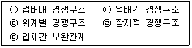
- ㉠
- ㉠, ㉡
- ㉠, ㉡, ㉢
- ㉠, ㉡, ㉢, ㉣
- ㉠, ㉡, ㉢, ㉣, ㉤
(정답률: 68%)
28. 토지의 이용 및 건축물의 용도 등을 제한하는 용도지역 중 “국토의 계획 및 이용에 관한 법률 시행령” (대통령령 제 29284호, 2018. 11. 13., 일부개정)에 따라 정한 상업지역에 해당하지 않는 것은?
- 중심상업지역
- 일반상업지역
- 전용상업지역
- 근린상업지역
- 유통상업지역
(정답률: 44%)
29. 상권의 크기에 대한 일반적인 설명으로 가장 옳지 않은 것은?
- 구매빈도가 높은 업종보다 낮은 업종의 상권이 더 크다.
- 배후지의 인구밀도가 높을수록 소매점포의 상권은 더 크다.
- 배후지의 소득수준이 낮을수록 소매점포의 상권은 더 크다.
- 폐쇄된 배후지를 대상으로 영업하는 소매점의 상권은 배후지에 한정된다.
- 구성업종들의 연계성이 낮은 소매단지보다 연계성이 높은 소매단지의 상권이 더 크다.
(정답률: 31%)
30. 소매점 건물의 너비와 깊이 같은 건물의 구조도 소매 매출에 영향을 미친다. 소매점의 건물 구조에 대한 아래의 내용 중에서 옳은 것은?
- 점포의 너비에 비해 깊이가 깊으면 구매빈도가 높은 일용품이나 식품의 매장으로 적합하다.
- 정면너비가 깊이에 비해 2배 이상이 되면 고객이 편안한 느낌을 느껴 객단가를 향상시키기가 쉽다.
- 정면너비가 넓으면 외부에서 점포에 대한 가시성이 높아져 고객의 내점률을 높이는 데 도움을 준다.
- 소매점의 넓은 정면너비는 시계성과 편의성에 악영향을 미친다.
- 깊이가 정면너비보다 2배 이상이 되면 고객이 안쪽 깊숙이 진입하기가 쉽다.
(정답률: 74%)
31. 상권분석기법 중 유추법(analog method)과 관련된 내용으로 가장 옳지 않은 것은?
- CST map
- 유사점포
- 상권범위 추정
- 규범적 모형
- 상권내 소규모지역(zone)
(정답률: 62%)
32. Huff모델과 관련한 설명으로 옳지 않은 것은?
- 소비자의 점포선택행동을 결정적 현상으로 본다.
- 소비자로부터 점포까지의 이동거리는 소요시간으로 대체하여 계산하기도 한다.
- 소매상권이 연속적이고 중복적인 공간이라는 관점에서 분석한다.
- 특정 점포의 효용이 다른 선택대안 점포들의 효용보다 클수록 그 점포의 선택가능성이 높아진다.
- 점포크기 및 이동거리에 대한 민감도계수는 상권마다 소비자의 실제구매행동 자료를 통해 추정한다.
(정답률: 32%)
33. 아래의 상권분석 기법들 중에서 상권내에서 분석대상이 되는 점포의 상대적 매력도를 파악할 수는 있으나 예상 매출액을 추정할 수는 없는 것은?
- 유사점포법
- MNL모델
- 체크리스트법
- 회귀분석법
- 허프모델
(정답률: 70%)
34. 상권분석 및 입지분석 과정에 점차로 이용가능성이 확대되고 있는 지리정보시스템(GIS)에 관한 설명으로 옳지 않은 것은?
- GIS 소프트웨어를 사용하여 데이터베이스를 조회하고 속성정보를 요약하여 표현한 지도를 주제도(主題圖)라고 한다.
- 상권분석에서 특정 기준을 만족시키는 공간을 파악하기 위한 조회도구로 지도를 사용하기도 한다.
- GIS는 컴퓨터를 이용한 지도작성체계와 데이터베이스 관리체계의 결합으로 프리젠테이션 지도작업, 공간분석 등이 가능하다.
- 버퍼(buffer)란 어떤 지도형상, 즉 점이나 선 혹은 면으로부터 특정한 거리 이내에 포함 되는 영역을 의미하며, 선의 형태로 표현된다.
- 중첩은 공간적으로 동일한 경계선을 가진 레이어를 겹쳐 놓고 지도형상과 속성들을 비교하는 기능이다.
(정답률: 70%)
35. '자신들의 일상적 필요를 충족시키는 기본 필수품을 취득하기 위해 통행할 필요가 있는 사람들로 구성된 교통'을 일컫는 용어로 옳은 것은?
- 주거 교통(living traffic)
- 통행 교통(pedestrian traffic)
- 상업 교통(commercial traffic)
- 기초 교통(basic traffic)
- 순환 교통(circulation traffic)
(정답률: 61%)
36. 소매점의 상권에 대한 설명으로 가장 옳지 않은 것은?
- 소매점의 상권은 지리적 거리의 한계가 있다.
- 소매점의 상권에 포함되는 소비자들은 동질적이다.
- 소매점의 상권은 고객 흡인의 정도에 따라 설정한다.
- 소매점의 상권은 점포의 입지조건에 따라 범위가 달라진다.
- 소매점의 상권은 취급상품의 종류에 따라 범위가 달라진다.
(정답률: 75%)
37. 소규모 소매점포의 상권단절요인에 일반적으로 해당하지 않는 것은?
- 폭 100m의 하천
- 왕복 2차선 도로
- 운동장만 있는 체육공원
- 담으로 둘러싸인 공장
- 지상을 지나는 철도
(정답률: 63%)
38. 쇼핑센터 가운데 파워센터(power center)에 입지할 업종으로 가장 옳지 않은 것은?
- 할인점
- 할인백화점
- 일용식품점
- 창고형 클럽
- 카테고리 킬러
(정답률: 58%)
39. 도매업의 경우에도 입지의 결정은 매우 중요하며, 생산구조와 소비구조의 특징에 따라 입지유형이 달라진다. 다음 중 생산구조가 소수의 대량집중생산이고 소비구조 역시 소수에 의한 대량집중소비구조일 때의 입지선택 기준으로 가장 옳은 것은?
- 수집기능, 중계기능, 분산기능이 모두 용이한 곳에 입지한다.
- 수집기능의 수행보다는 분산기능의 수행이 용이한 곳에 입지한다.
- 수집기능의 수행이 용이하고 분산기능 수행도 용이한 곳에 입지한다.
- 수집기능이나 분산기능보다는 중계기능의 수행이 용이한 곳에 입지한다.
- 분산기능의 수행보다는 수집기능의 수행이 용이한 곳에 입지한다.
(정답률: 42%)
40. 다음 중 상권분석을 위한 중심지이론과 관련된 내용으로 가장 옳지 않은 것은?
- 크리스탈러(W. Christaller)
- 최대도달거리(range)
- 최소수요충족거리(threshold)
- 체크리스트(checklist)
- 상위계층 중심지와 하위계층 중심지
(정답률: 70%)
41. “상가건물임대차보호법”(법률 제14242호, 2016. 5. 29., 타법개정)에서는 권리금을 아래의 글상자와 같이 정의하고 있다. ( )안에 들어갈 내용으로 옳지 않은 것은?
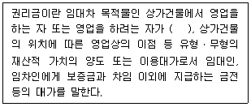
- 영업시설ㆍ비품
- 경쟁상황
- 거래처
- 신용
- 영업상의 노하우
(정답률: 40%)
42. 소비자들이 상품을 구매하기 위해 거주지 등 특정장소에서 점포로 향하는 동선을 파악할 때 활용하는 원리 중에서 아래 글상자의 내용에 해당하는 것은?
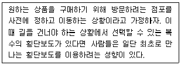
- 안전 증시의 법칙
- 최단거리 실현의 법칙
- 보증실현의 법칙
- 집합의 법칙
- 직진선호의 법칙
(정답률: 47%)
43. 임차할 점포를 평가할 때 고려해야할 사항으로 가장 옳지 않은 것은?
- 입점 가능한 업종
- 임대면적 중 전용면적
- 점포 소유자의 전문성
- 점포의 권리관계
- 점포의 인계 사유
(정답률: 77%)
44. 유통가공을 수행하는 도매업체의 입지선정에는 공업입지 선정을 위한 베버(A. Weber)의 “최소비용이론”을 준용할 수 있다. 총물류비만을 고려하여 이 이론을 적용할 때, 원료지향형이나 노동지향형 대신 시장지향형입지를 택하는 것이 유리한 조건으로 가장 옳은 것은?
- 유통가공으로 중량이 감소되는 경우
- 부패하기 쉬운 완제품을 가공·생산하는 경우
- 제품수송비보다 원료수송비가 훨씬 더 큰 경우
- 미숙련공을 많이 사용하는 노동집약적 유통가공의 경우
- 산지가 국지적으로 몰려 있는 편재원료의 투입 비중이 높은 경우
(정답률: 76%)
45. 지역상권의 매력도를 평가할 때는 먼저 수요요인과 공급요인을 고려해야 한다. 이 요인들을 평가하는데 소매포화지수(IRS: Index of Retail Saturation)와 시장성장 잠재력지수(MEP: market expansion potential)를 활용할 수 있다. 이 두 지수들을 기준으로 평가할 때 그 매력성이 가장 높은 지역상권은?
- IRS가 작고 MEP도 작은 지역상권
- IRS가 작고 MEP는 큰 지역상권
- IRS가 크고 MEP는 작은 지역상권
- IRS가 크고 MEP도 큰 지역상권
- IRS의 크기와는 상관없이 MEP가 큰 지역상권
(정답률: 74%)
3과목: 유통마케팅
46. 재무적 성과평가를 위한 자료 중 손익계산서에 대한 설명으로 옳은 것은?
- 일정 회계기간 동안의 경제적 사건과 그 기간 말의 경제적 상태를 나타내는 보고서
- 소매점의 자금이 어떻게 조달되었고 어디에 사용되고 있는지를 나타내주는 보고서
- 일정기간의 모든 수익과 비용을 대비시켜 당해 기간의 순이익을 계산한 보고서
- 일정기간 동안의 소매점의 현금의 유입과 유출내용을 표시한 보고서
- 한 기간의 매출액이 당해 기간의 총비용과 일치하는 점을 분석한 보고서
(정답률: 71%)
47. 소매점의 신제품 조사를 위해 표적시장을 잘 반영하리라 생각되는 집단을 대상으로 설문조사를 했다면 어떤 표본추출방법에 해당하는가?
- 편의표본추출
- 판단표본추출
- 확률비례추출
- 집락표본추출
- 층화표본추출
(정답률: 59%)
48. 아래 글상자의 ( ㉠ )과 ( ㉡ )에 들어갈 용어로 가장 옳은 것은?
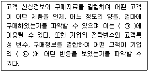
- ㉠ 점포입지선정, ㉡ 유통경로 계열화
- ㉠ 유통경로관리, ㉡ 서비스 품질
- ㉠ 상권분석, ㉡ 소매점 포지셔닝
- ㉠ 공급사슬관리, ㉡ 상품공급
- ㉠ 시장세분화, ㉡ 4P전략
(정답률: 40%)
49. 고객의 구매심리 단계별 고객응대로 옳지 않은 것은?
- 주의 단계에서는 미지의 판매원과 상품에 대한 불안을 안고 있으므로 일단 대기한다.
- 흥미 단계에서는 구매 욕구를 지속시켜 소개 판매를 유도해야 한다.
- 연상 및 욕구 단계에서는 정확한 셀링포인트를 설명하여 상품가치를 인식시킨다.
- 확신 단계에서는 판매조건을 제시하며 구매 단계로 유도한다.
- 구매 단계 후에는 사후관리를 통해 만족을 심어주고 재판매를 유도해야 한다.
(정답률: 43%)
50. 아래 글상자의 사례를 통해 해당 기업이 사용한 신제품 가격전략으로 옳은 것은?
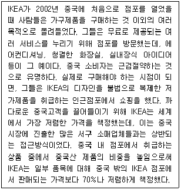
- 시장침투가격(market penetration pricing)
- 스키밍가격(skimming pricing)
- 경쟁가격(competitive pricing)
- 종속제품 가격(captive product pricing)
- 묶음가격(bundle pricing)
(정답률: 70%)
51. 아래 글상자의 내용 중에서 마케팅 역량 향상에 해당하는 고객관계관리(CRM) 시스템의 데이터 이용효과로 가장 옳은 것은?
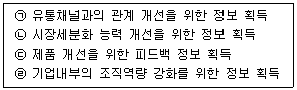
- ㉠, ㉡
- ㉢, ㉣
- ㉠, ㉣
- ㉠, ㉢, ㉣
- ㉠, ㉡, ㉢, ㉣
(정답률: 69%)
52. 소매가격전략에 대한 설명으로 옳지 않은 것은?
- EDLP는 Every Day Low Price의 준말로, 상품의 일시적인 가격할인이 아닌 항상 저렴한 가격으로 판매하는 전략을 의미한다.
- EDLP는 경쟁자와의 지나친 가격전쟁의 압박을 덜어주며 가격이 자주 변하지 않는다는 장점이 있다.
- High-Low가격 전략은 일반적으로 저가격을 지향하기 보다는 품질이나 서비스를 강조하는 가격정책이다.
- High-Low가격 전략은 소비자들을 유인하기 위해 필요한 시기에 적극적으로 할인된 낮은 가격을 제공한다.
- High-Low가격 전략의 경우 EDLP에 비해 수요변동성이 낮고 상품의 재고관리가 용이하다는 장점이 있다.
(정답률: 72%)
53. 단품관리에 대한 설명으로 옳지 않은 것은?
- 제품을 더 이상 분류할 수 없는 최소 단위로 분류해서 관리하는 방식이다.
- 인기상품과 재고비용이 발생하는 비인기상품을 구분해나갈 수 있다.
- 실적 향상 및 생산성 증가를 위해 상품 판매에 따라 매대 할당이 이루어진다.
- 인기 있는 상품이 품절된 경우 대체상품을 구매하도록 소비자를 유인할 수 있다.
- 단품별 매출액 기여도 등과 같은 책임소재가 명확해진다.
(정답률: 64%)
54. 아래 글상자 ( ㉠ )과 ( ㉡ )에 들어갈 용어를 순서대로 옳게 나열한 것은?
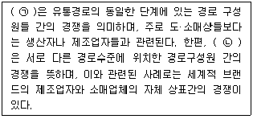
- ㉠ 업태내 경쟁, ㉡ 업태간 경쟁
- ㉠ 업태간 경쟁, ㉡ 업태내 경쟁
- ㉠ 수평적 경쟁, ㉡ 수직적 경쟁
- ㉠ 수직적 경쟁, ㉡ 수평적 경쟁
- ㉠ 업태내 경쟁, ㉡ 수직적 경쟁
(정답률: 69%)
55. 가격전략에 대한 설명으로 옳지 않은 것은?
- 수요탄력성이 낮은 경우 고가전략을 사용한다.
- 진입장벽이 낮은 경우 저가전략을 사용한다.
- 성장률 및 시장점유율 극대화를 위해서는 고가전략을 사용한다.
- 원가우위를 통한 생존전략을 목표로 하기 위해서는 저가전략을 사용한다.
- 가격-품질 연상효과를 극대화하기 위해서 고가전략을 사용한다.
(정답률: 67%)
56. 포지셔닝과 차별화 전략에 대한 설명으로 옳지 않은 것은?
- 포지셔닝은 표적시장 고객들의 인식 속에서 차별적인 위치를 차지하기 위해 자사제품이나 기업의 이미지를 설계하는 행위를 말한다.
- 성능, 디자인과 같이 제품의 물리적 특성을 통한 차별화를 제품 차별화(product differentiation)라고 한다.
- 기업들은 제품의 물리적 특성 이외에 제품의 서비스에 대해서도 차별화가 가능하며, 이를 서비스 차별화(services differentiation)라고 한다.
- 포지셔닝전략의 핵심은 고객에게 품질이나 디자인에서 어떤 결정적 차이점(decisive difference)을 제시하느냐에 있다.
- 기업 이미지나 브랜드 이미지로 인해 동일한 제품을 제공하더라도, 소비자들은 그 제품을 다르게 인식할 수 있는데, 이를 이미지 차별화(image differentiation)라고 한다.
(정답률: 53%)
57. 아래 글상자의 사례와 관련된 기업의 마케팅 관리 철학으로 옳은 것은?
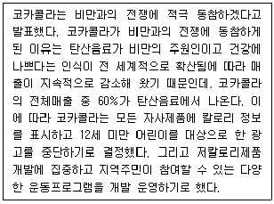
- 생산개념(production concept)
- 제품개념(product concept)
- 판매개념(selling concept)
- 마케팅개념(marketing concept)
- 사회지향적 마케팅개념(societal marketing concept)
(정답률: 80%)
58. 구매욕구세분화에 대한 설명으로 옳지 않은 것은?
- 구매욕구는 소비자가 '왜?' 제품을 구매하는가를 설명한다.
- 구매욕구차원에는 기능적 편익, 감각적 편익, 상징적 편익이 있다.
- 기능적 편익은 다양한 상품구색, 좋은 위치, 정보제공 등의 구매상의 실질적인 혜택을 의미한다.
- 감각적 편익은 구매자가 제품을 구매할 때 느끼는 오감적 즐거움과 느낌을 말한다.
- 상징적 편익이란 구매자가 느끼는 경쟁사 대비 특정 소매점의 상대적 차이를 말한다.
(정답률: 63%)
59. 마케팅에 대한 설명으로 옳지 않은 것은?
- 마케팅은 소비자의 필요와 욕구를 충족시키기 위해 시장에서 교환이 일어나도록 하는 일련의 활동들을 말한다.
- 마케팅관리란 표적시장을 선택하고 뛰어난 고객가치의 창출, 전달 및 알림을 통해 고객을 획득, 유지, 확대하는 기술과 과학을 의미한다.
- 생산개념의 마케팅철학에서는 기술적으로는 뛰어나지만 시장에서는 외면당하는 제품들이 출시되는 경우를 흔히 볼 수 있다.
- 판매개념은 공격적인 영업 및 촉진활동을 펼쳐야만 고객이 제품이나 서비스를 충분히 구입할 것이라고 가정한다.
- 마케팅개념을 경영철학으로 채택하고 있는 기업에서는 고객이 상품과 관련하여 갖고 있는 문제들을 완전히 해결하여 만족을 얻을 수 있도록 하는 것을 목표로 한다.
(정답률: 42%)
60. 아래 글상자의 사례에서 사용된 소비자 판촉도구로 옳은 것은?
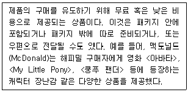
- 쿠폰(coupon)
- 샘플(sample)
- 현금환불(cash refunds)
- 프리미엄(premiums)
- 가격할인 패키지(price packs)
(정답률: 68%)
61. “유통산업발전법”(법률 제14997호, 2017.10.31., 일부개정)에서 명시적이고 직접적으로 규정하고 있는 유통관리사의 직무에 해당하지 않는 것은?
- 유통경영・관리 기법의 향상
- 유통경영・관리와 관련한 계획・조사・연구
- 유통경영・관리와 관련한 교육
- 유통경영・관리와 관련한 진단・평가
- 유통경영・관리와 관련한 상담・자문
(정답률: 52%)
62. 아래 글상자에서 설명하는 촉진믹스 전략으로 옳은 것은?
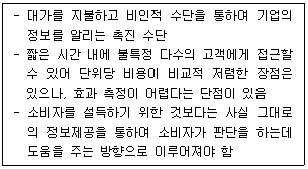
- 홍보(publicity)
- 광고(advertising)
- 인적 판매(personal selling)
- 다이렉트 마케팅(direct marketing)
- 카탈로그 마케팅(catalog marketing)
(정답률: 66%)
63. 제조업체의 푸시(push)전략에 대한 설명으로 옳지 않은 것은?
- 최종 소비자가 아닌 중간상들을 대상으로 하여 판매 촉진활동을 하는 것을 말한다.
- 소비자를 대상으로 촉진할 만큼 충분한 자원이 없는 소규모 제조업체들이 주로 사용하는 촉진 전략이다.
- 판매원의 영향이 큰 전문품의 경우 푸시전략이 효과적이다.
- 가격할인, 수량할인, 협동광고, 점포판매원 훈련프로그램들을 활용하여 촉진한다.
- 제조업체가 중간상들로부터 자발적으로 주문을 받기 위해 행하는 촉진 전략을 말한다.
(정답률: 55%)
64. 머천다이징(merchandising)에 대한 설명으로 옳지 않은 것은?
- 머천다이징은 우리말로 상품기획, 상품화계획 등으로 불린다.
- 머천다이저(merchandiser)는 소매점의 특정 카테고리의 상품을 담당하고 있다. 그렇기 때문에 머천다이저를 카테고리 매니저라 부르기도 한다.
- 머천다이징은 유통업체만의 고유 업무로 고객의 니즈에 부합하는 상품을 기획하여 판매하며 제조업체, 서비스 업체에는 해당되지 않는다.
- 머천다이징은 구매, 진열, 재고, 가격, 프로모션 등 광범위한 활동을 포함한다.
- 머천다이징의 성과를 평가하는 대표적인 지표 중 하나는 재고총이익률(GMROI)이다.
(정답률: 77%)
65. 아래 글상자가 나타내는 구매시점(POP : point of purchase) 촉진의 유형으로 옳은 것은?
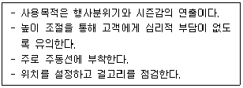
- 현수막
- 포스터
- 배너
- 정보안내지
- 가격표 쇼카드
(정답률: 45%)
66. 아래 글상자는 진열유형 중 하나에 대한 설명이다. 관련 진열유형으로 옳은 것은?
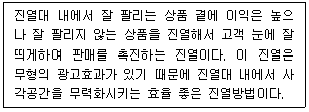
- 수직진열
- 수평진열
- 샌드위치 진열
- 라이트 업(Right up) 진열
- 전진입체진열
(정답률: 68%)
67. 아래 글상자의 ( ㉠ )과 ( ㉡ )에 들어갈 용어를 순서대로 옳게 나열한 것은?
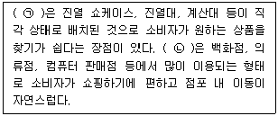
- ㉠ 수직형, ㉡ 자유형
- ㉠ 수직형, ㉡ 수평형
- ㉠ 격자형, ㉡ 자유형
- ㉠ 격자형, ㉡ 수평형
- ㉠ 표준형, ㉡ 자유형
(정답률: 64%)
68. 점포 내부 환경관리에 대한 설명으로 옳지 않은 것은?
- 점포의 주체적 기능은 판촉이므로 조명은 진열에 대해 상품을 부각시켜 고객을 유인하는 효과적인 역할을 한다.
- 점포 안의 조명은 항상 밝게 하여 화사한 분위기를 조성해야 한다.
- 소매상에서는 색채 배색과 조절을 통해 고객의 주의를 끌어들이면서 구매의욕을 환기시킨다.
- 여성을 상대로 하는 사업은 흰색과 파스텔 톤을, 어린이가 주 고객인 유치원이나 장난감 가게 등은 노랑, 빨강과 같은 원색을 사용하는 것이 좋다.
- 벽면에 거울을 달거나 점포 일부를 계단식으로 높이면 실제 점포보다 넓어 보일 수 있다.
(정답률: 72%)
69. 점포에서의 활동 역할에 따른 공간구성에 대한 설명으로 옳지 않은 것은?
- 판매 예비 공간은 소비자에게 정보를 전달하거나 결제를 도와주는 공간이다.
- 인적 판매 공간은 판매원이 상품을 보여주고 상담을 하기 위한 공간이다.
- 서비스 공간은 휴게실, 탈의실과 같이 소비자의 편익을 위하여 설치되는 공간이다.
- 판촉 공간은 판촉상품을 전시하거나 보호하는 공간이다.
- 진열 판매 공간은 상품을 진열하여 셀프 판매를 유도하는 곳이다.
(정답률: 56%)
70. 다음 중 유통업체가 고객에게 적정 수량의 적정 상품 구색을 적시에 제공하는 동시에 자사의 재무적 목표를 달성하려고 노력하는 과정을 나타내는 용어로 가장 옳은 것은?
- 카테고리관리(category management)
- 고객관계관리(customer relationship management)
- 상품관리(merchandise management)
- 점포관리(store management)
- 전략적 이익관리(strategic profit management)
(정답률: 37%)
4과목: 유통정보
71. 유통정보시스템과 관련된 용어에 대한 설명으로 옳은 것은?
- 인바운드 콜(inbound call)은 유통업체에서 전화를 이용해 고객을 대상으로 영업하는 방법이다.
- 크로스 셀링(cross selling)은 고객을 대상으로 한 단계 더 업그레이드된 제품을 상향 판매하는 전략이다.
- 업 셀링(up selling)은 고객을 대상으로 서로 관련성이 없는 제품을 판매하는 전략이다.
- 오더피킹시스템(order picking systems)은 수주 받은 물품을 창고에서 출하하는 업무를 지원하는 시스템이다.
- 쇼루밍(showrooming)은 온라인 매장에서 제품을 보고, 오프라인 매장에서 제품을 구매하는 소비행태이다.
(정답률: 59%)
72. 디지털 경제하에서의 유통업 패러다임 변화로 가장 옳지 않은 것은?
- 생산요소를 투입하다 보면 어느 순간 투입 단위당 산출량이 감소하는 수확체감의 법칙이 적용된다.
- 자산의 의미도 유형자산(Tangible Assets)에 국한되지 않고 무형자산(Intangible Assets)으로까지 확대되고 있다.
- “네트워크의 가치는 가입자 수에 비례해 증대하고 어떤 시점에서부터 그 가치는 비약적으로 높아진다.”는 메트칼프(Metcalf)의 법칙이 적용된다.
- 인터넷의 쌍방향성이라는 특성으로 인해 구매자는 복수의 판매자를 비교하고 가격협상까지 할 수 있는 구매자 주도 시장으로 변화하고 있다.
- 생산자는 제품당 이윤이 줄어들 가능성이 있지만, 거래비용이 낮아져 소비자 수요가 확대되고, 제품의 판매량이 증가함으로써 오히려 전체적으로는 이윤이 늘어날 수 있다.
(정답률: 56%)
73. 온라인(모바일 포함)·오프라인을 넘나들면서 제품의 정보를 수집하여 최적의 제품을 찾아내는 소비자를 일컫는 용어는?
- 쓰루쇼퍼(Through-shopper)
- 스마트쇼퍼(Smart-shopper)
- 크로스쇼퍼(Cross-shopper)
- 엑스쇼퍼(X-shopper)
- 프로슈머(Prosumer)
(정답률: 61%)
74. 제4차 산업혁명 시대의 사회 특성에 대한 설명으로 옳지 않은 것은?
- 기술 발전에 따라 단순 반복 작업을 수행하는 직종이 줄어든다.
- 공유경제의 확대에 따라 상품 및 서비스를 협력 소비하는 개념이 활성화된다.
- 인공지능 기술을 활용하는 혁신적인 산업이 발전한다.
- 사이버 물리 시스템(Cyber Physical Systems)의 이용이 줄어든다.
- 정보기술의 융복합으로 새로운 산업이 나타난다.
(정답률: 80%)
75. 아래 글상자의 내용에 부합되는 OLAP(Online Analytical Processing)의 기능으로 가장 옳은 것은?
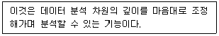
- 드릴링(drilling)
- 리포팅(reporting)
- 분해(slice & dice)
- 피보팅(pivoting)
- 필터링(filtering)
(정답률: 63%)
76. 아래 글상자의 ㉠, ㉡, ㉢에 들어갈 용어로 옳은 것은?
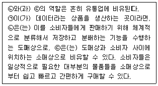
- ㉠ 거래처리시스템, ㉡ 데이터웨어하우스, ㉢ 빅데이터
- ㉠ 거래처리시스템, ㉡ 데이터웨어하우스, ㉢ 데이터마트
- ㉠ 의사결정시스템, ㉡ 그룹의사결정시스템, ㉢ 데이터웨어하우스
- ㉠ 거래처리시스템, ㉡ 의사결정시스템, ㉢ 그룹의사결정시스템
- ㉠ 데이터마트, ㉡ 데이터웨어하우스, ㉢ 빅데이터
(정답률: 66%)
77. XML에 대한 설명으로 옳지 않은 것은?
- 마크업언어 중 가장 사용하기 어렵고 불편한 언어로 꼽힌다.
- 사용자가 사용할 태그를 정의하여 사용할 수 있다.
- 데이터를 저장하고 전달할 목적이 주요 기능이다.
- 서로 다른 시스템간 다양한 종류의 데이터를 쉽게 교환할 수 있도록 한다.
- 표준SGML과 HTML의 장점을 취한 언어이다.
(정답률: 68%)
78. 아래 글상자의 내용에 부합되는 공유유형에 따른 물류공동화의 종류로 가장 옳은 것은?
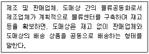
- 수직적 공동화
- 수평적 공동화
- 물류기업간 공동화
- 경쟁업체간의 공동화
- 화주와 물류업체의 파트너십
(정답률: 56%)
79. m-비즈니스의 모바일 환경적 특징(무선인터넷 서비스가 가능한 지역내)으로 가장 옳지 않은 것은?
- 실시간 정보를 어디서나 받을 수 있는 특성
- 시간과 공간의 제약없이 접속할 수 있는 특성
- 작고 가벼운 의사소통 도구
- 사용자 동의 없이도 사용자 위치정보를 항상 알 수 있는 특징
- 신속하게 접속하여 정보를 탐색할 수 있는 특징
(정답률: 82%)
80. 바코드의 설명으로 가장 옳지 않은 것은?(문제 오류로 가답안 발표시 3번으로 발표되었지만 확정답안 발표시 1, 3번이 정답처리 되었습니다. 여기서는 가답안인 3번을 누르시면 정답 처리 됩니다.)
- 대형상품(중량 1.3kg 이상, 길이 45cm이상)의 경우 앞면과 뒷면 2개의 바코드를 인쇄한다.
- 표준물류식별코드(GTIN-14)는 일반적으로 다수의 낱개 상품이 포함된 박스 단위상품에 적용하는 코드이다.
- UPC(Universal Product Code)는 주로 유럽과 아시아 지역에서 사용하는 바코드이다.
- 바코드 스캐너는 적색계통의 색상을 모두 백색으로 감지하여 백색과 적색으로 이루어진 바코드는 판독이 불가능하다.
- 일반적으로 소매상품의 경우 상품의 뒷면 우측 하단에 바코드를 인쇄한다.
(정답률: 75%)
81. RFID 시스템 구성요소에 대한 설명으로 가장 옳지 않은 것은?
- Read/Write 태그는 몇 번이고 데이터의 입력 및 변경이 가능하다.
- Read Only 태그는 제조 시 입력된 데이터를 변경할 수 없다.
- RFID 리더기는 태그의 정보를 활용하기 위해 태그와 송·수신하거나 태그에서 수집된 정보를 전송하는 장치이다.
- 능동형 태그는 읽기/쓰기가 가능하고 태그 자체에 전원 공급 장치를 가지고 있기 때문에 수동형 태그에 비해 원거리에서도 인식이 가능하다.
- 수동형 태그는 전원을 공급받아야 하기 때문에 낮은 출력의 리더기가 필요하고 인식거리도 짧아서 크기나 가격 측면에서 능동형 태그에 비해 경쟁력이 떨어진다.
(정답률: 55%)
82. (주)대한상의의 A상품의 연간 수요량이 10,000개, 주문 비용은 매 주문마다 200원, 단위당 재고유지비용은 연간 400원이라 할 때, 경제적 1회 발주량(EOQ)으로 옳은 것은?
- 100개
- 200개
- 300개
- 400개
- 500개
(정답률: 48%)
83. 온라인 마케팅 기법에 대한 설명으로 가장 옳지 않은 것은?
- 퍼미션 마케팅(Permission Marketing): 소비자와의 장기적인 대화식 접근법으로 소비자를 자발적으로 마케팅과정에 참여하게 하는 것이다.
- 버즈 마케팅(Buzz Marketing): 하나의 웹사이트가 다른 웹사이트에게 그 사이트를 소개함에 따라 새로운 비즈니스 기회를 갖는 것에 대한 커미션을 지불하기로 동의하는 것이다.
- 바이러스 마케팅(Virus Marketing): 온라인 버전의 구전 마케팅으로 고객들이 기업의 마케팅메시지를 친구, 가족 혹은 동료들에게 전달하면서 새로운 고객을 확대하는 것이다.
- 블로그 마케팅(Blog Marketing): 블로그를 판매를 목적으로 하는 광고뿐만 아니라, 판매를 직접적인 목적으로 하지 않는 브랜드 광고를 게재하는 측면에도 활용하는 것이다.
- 소셜 네트워크 마케팅(Social Network Marketing): 소셜 네트워크 서비스 이용환경에서 마케팅 활동을 수행하는 것이다.
(정답률: 50%)
84. POS시스템 구성기기에 대한 설명으로 가장 옳지 않은 것은?
- 스캐너(Scanner)는 상품에 인쇄된 바코드를 판독하는 장치이다.
- 스토어 컨트롤러는 판매, 재고, 구매파일 등을 갱신하고 기록하는 기능을 담당한다.
- 점포의 POS단말기는 금전등록, 출납, 영수증 발행, 신용카드 판독 등의 기능을 수행한다.
- POS터미널에는 상품명, 가격, 구입처, 구입가격 등 상품에 관련된 모든 정보가 데이터베이스화되어 있는 상품마스터 파일이 저장되어 있다.
- 스토어 컨트롤러는 점포가 체인본부나 제조업체와 연결되어 있는 경우 스토어 컨트롤러에 기록된 각종 정보를 본부 주컴퓨터와 송수신 한다.
(정답률: 50%)
85. 아래 글상자 내용 중 ㉠, ㉡, ㉢에 들어갈 용어로 옳은 것은?
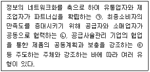
- ㉠ QR, ㉡ EDI, ㉢ CRP
- ㉠ QR, ㉡ ECR, ㉢ CRP
- ㉠ CAO, ㉡ EDI, ㉢ CRP
- ㉠ EDI, ㉡ CAO, ㉢ CRP
- ㉠ QR, ㉡ CAO, ㉢ CRP
(정답률: 43%)
86. 지식경영과 지식관리시스템에 대한 설명으로 옳지 않은 것은?
- 지식관리시스템은 지식의 저장과 검색을 위한 기능을 제공한다.
- 지식관리시스템의 도입은 조직 운영의 효율성과 효과성 측면에서 업무 성과를 개선해 준다.
- 기업에서는 지식관리 중요성이 대두됨에 따라 최고지식 관리책임자 (Chief Knowledge Officer)를 선임하고 있다.
- 기업에서는 지식경영을 통한 경쟁력 확보를 위해서는 지식보안을 통해 철저하게 지식공유가 이루어지지 않도록 통제해야 한다.
- 기업에서 이용하는 지식관리시스템의 이용성을 높이기 위해서는 동기부여 측면에서 보상시스템을 구축해야 한다.
(정답률: 79%)
87. 지식경영 프로세스에 대한 설명으로 옳지 않은 것은?
- 명시적 지식이란 체계화된 지식으로 고객목록, 법률계약, 비즈니스 프로세스 등 명확한 체계를 갖추고 있다.
- 암묵적 지식이란 기업의 지적자본으로 조직 구성원들의 머릿속에 존재하는 지식으로 기업 경쟁우위 창출을 위한 핵심요소이다
- 내면화 단계는 형식적 지식을 암묵적 지식으로 변환하는 과정이다.
- 표출화 단계는 암묵적 지식을 형식적 지식으로 변환하는 과정이다.
- 지식창출 과정은 정보에서 데이터를 추출하고, 데이터에서 지식을 추출한다.
(정답률: 51%)
88. 경쟁우위와 지능화 수준에 따른 지식경영 분석기술의 출현 및 발전단계로 가장 옳은 것은?
- 리포트 → 스코어카드와 대시보드 → 데이터 마이닝 → 빅데이터
- 스코어카드와 대시보드 → 데이터 마이닝 → 빅데이터 → 리포트
- 리포트 → 빅데이터 → 데이터 마이닝 → 스코어카드와 대시보드
- 빅데이터 → 스코어카드와 대시보드 → 데이터 마이닝 → 리포트
- 데이터 마이닝 → 스코어카드와 대시보드 → 리포트 → 빅데이터
(정답률: 63%)
89. 아래 글상자가 설명하는 용어로 가장 적합한 것은?
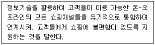
- 비콘
- 파밍
- 매시업
- 코피티션
- 옴니채널
(정답률: 77%)
90. 데이터베이스에 저장된 데이터가 갖추어야 할 특성으로 가장 옳지 않은 것은?
- 표준화
- 논리성
- 중복성
- 안정성
- 일관성
(정답률: 75%)